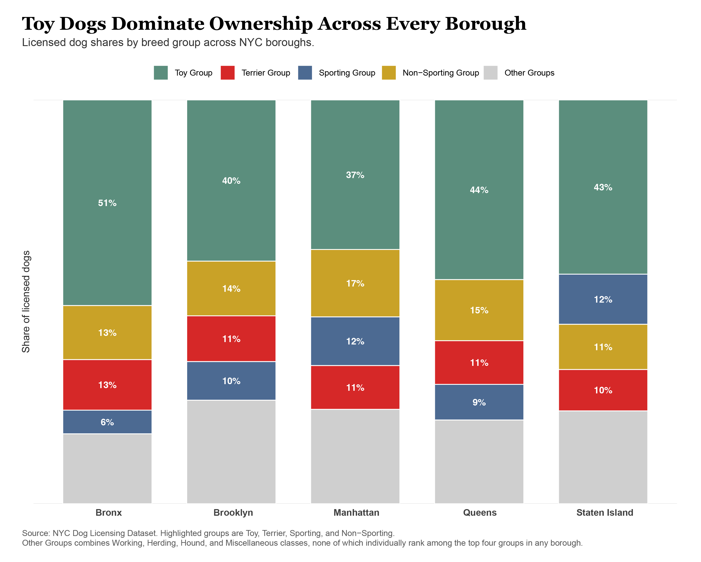
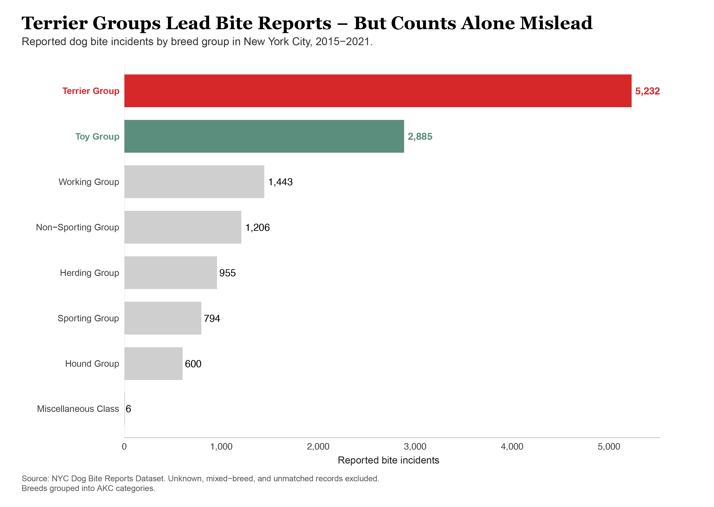
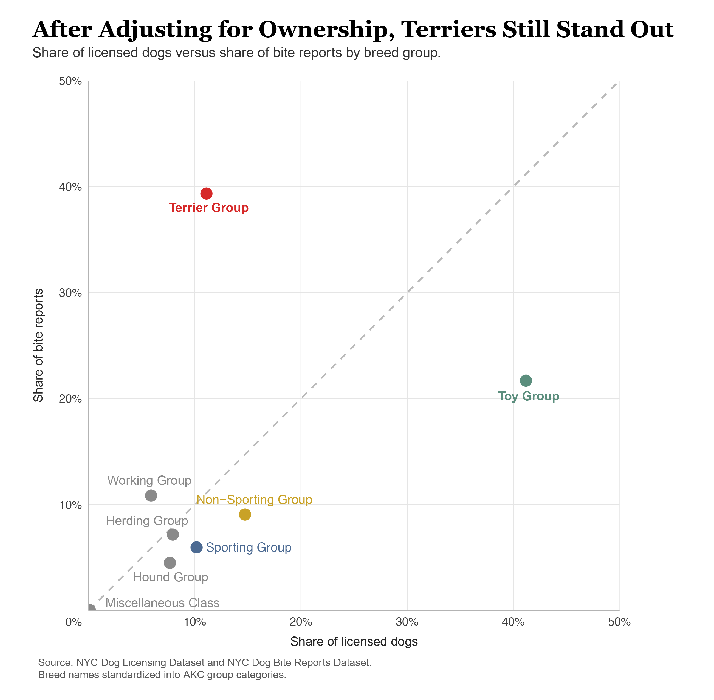
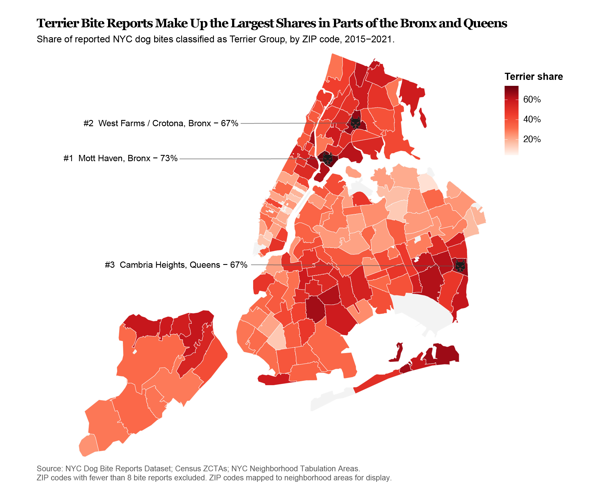

DATA 1500 Final Project
Do Some Dogs Bite More,
Or Are They Just More Popular?
Comparing New York City bite reports with dog ownership records reveals why raw rankings can be misleading.
The Problem With Raw Rankings
New York City publishes thousands of dog bite reports, and those rankings often shape public perception about which dogs are considered dangerous.
But raw bite totals do not tell the full story. A breed group may appear frequently in bite reports simply because it is more common across the city. Popular dogs naturally create more interactions and more chances for incidents to be reported.
To better understand relative bite risk, this project compares reported bite incidents with licensed dog ownership records across New York City. By combining the numerator, bite reports, with the denominator, dog population, we can ask a more meaningful question:
Which dogs bite more — or less — than expected?
Dog bite data may reflect not only dogs themselves, but also ownership patterns, neighborhood context, and reporting behavior.
Four Familiar Faces of New York’s Dog Population
Representative examples from four major American Kennel Club breed groups used throughout this analysis. From left to right: Toy, Terrier, Sporting, and Non-Sporting.
Who Is Most Common?
New York’s dog population is far from evenly distributed. Some breed groups appear across the city much more often than others, which means any raw ranking of bite incidents will naturally favor common dogs before behavior is even considered.
That matters because popularity creates exposure. More dogs often means more walks, more park visits, more neighbors, more strangers, and more opportunities for incidents to be reported. Before asking which dogs bite the most, we first need to understand which dogs are most common.

Based on the data, Toy groups lead everywhere, but the rest of the rankings vary more. Sporting dogs rank higher in some boroughs, while Terrier groups rise or fall by location. Ownership patterns likely reflect housing type, available space, and neighborhood preferences.
Most importantly, this chart establishes the denominator. If one group is much more common than another, higher bite totals may reflect population size rather than higher risk.
Who Appears Most in Bite Reports?
When we shift from ownership to bite reports, the ranking changes quickly. Terrier groups move to the top of the list, while Toy groups fall well below their ownership share. The dogs seen most often in city registrations are not the same dogs appearing most often in bite reports.

At first glance, that may seem clear. But raw counts still mix two forces: how common a group is, and how often incidents are reported once those dogs are present.
From 2015 through 2021, Terrier groups account for more reported bite incidents than any other breed category in the dataset. That is notable because they did not lead ownership in any borough shown above. Meanwhile, Toy groups dominate registrations citywide but rank much lower in bite totals.
The gap between population share and incident totals is exactly why ownership-adjusted comparisons matter. Raw counts suggest something unusual, but they do not tell us whether a group appears often because it is common, because it is overrepresented in incidents, or both.
After Adjusting for Ownership
The next chart compares each group’s share of licensed dogs with its share of reported bite incidents. If incidents followed popularity alone, every point would fall near the diagonal reference line. Groups above the line appear in bite reports more often than expected, while groups below the line appear less often than expected.

Even after adjusting for ownership, Terrier groups remain clearly above the expected line. Their share of reported bite incidents exceeds their share of the licensed dog population, suggesting that the earlier ranking was not driven by popularity alone.
Toy groups show the opposite pattern. Despite dominating ownership across the city, they account for a much smaller share of bite reports than their population size would predict. Most other groups sit closer to the diagonal, where bite share more closely matches ownership share.
This chart provides the clearest answer in the project. After accounting for how common each group is, Terrier dogs still stand out as the most overrepresented group in bite reports.
Where Does the Pattern Concentrate?
If that elevated pattern is real citywide, the next question becomes where those incidents are most concentrated.

The citywide pattern also has a geographic dimension. Several of the highest Terrier shares appear in parts of the Bronx and Queens, where Terrier-related incidents make up a large portion of all reported bites.
That does not necessarily mean those neighborhoods have the most dangerous dogs. Local patterns may also reflect ownership mix, housing conditions, pedestrian activity, park access, complaint behavior, and reporting rates.
Still, the map helps identify where Terrier-related incidents are most concentrated. Those neighborhoods may deserve closer attention in future prevention efforts.
Conclusion
Taken together, these charts show that raw rankings alone oversimplify the story. After adjusting for ownership, Terrier groups stand out most clearly — and some neighborhoods experience that pattern more strongly than others.
At the same time, the data should not be read as a simple ranking of “good” or “bad” dogs. Bite reports are shaped by city life: density, housing, walking patterns, public space, reporting behavior, and the kinds of dogs people choose to live with.
Dog bite data may reveal as much about cities and people as it does about dogs.
Sources and Methods
This project uses New York City dog licensing records and New York City dog bite report records. Breed names were cleaned and standardized into American Kennel Club breed group categories. Unknown, mixed-breed, and unmatched bite records were excluded from the breed-group comparisons. ZIP codes with fewer than eight bite reports were excluded from the map to reduce instability from very small counts.
Data sources: NYC Dog Licensing Dataset, NYC Dog Bite Reports Dataset, U.S. Census ZCTA boundary files, and NYC Neighborhood Tabulation Areas.